1. システム構成概要
本マニュアルは、三菱電機製PLC（CC-Link IE TSNマスター） and ワイドミュラー製リモートI/Oシステム「u-remote」（UR20-XXX-PN-FSCC）を接続し、データ通信を行うための初期設定手順です。
【システム構成図】
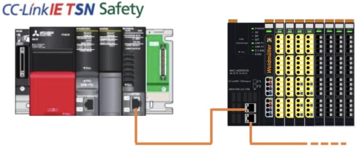
【初期IPアドレス・設定値】
| 機器名 | デフォルトIP | 設定ネットワーク |
|---|---|---|
| 三菱PLC (Master) | 192.168.0.253 | CC-Link IE TSN ネットワーク (サブネット: 255.255.255.0) |
| UR20-PN-FSCC | 192.168.0.202 |
1. 使用部品構成
1.1 使用製品
本安全リモートIOをご使用する際は、下記のマスタ機器および関連機器をご使用ください。
【ハードウェア】
- 安全CPU
R08SFCPU，R16SFCPU，R32SFCPU，R120SFCPU ※バージョン20以降 - 安全機能ユニット R6SFM ※バージョン20以降
- CC-Link IE TSNマスタ
RJ71GN11-T2 ※バージョン28以降 - モーションユニット
RD78G4，RD78G4(S)，RD78G8，RD78G8(S)，RD78G16，
RD78G16(S)，RD78G32，RD78G64，RD78GHV，RD78GHW ※バージョン34以降
【ソフトウェア】
- GX-Works3
1.115以降
※バージョン1.115V以前のGX Works3を使用した場合は、動作保証がございません。
2. サブ ID の設定
2.1 DIP スイッチの設定
安全機能付き I/O ユニットの側面にある DIP スイッチを使用して、装着位置を示すサブ ID を設定します。
DIP スイッチの設定は、外部供給電源の OFF およびユニット未接続の状態で行ってください。
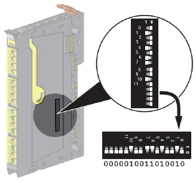
2.2 サブ ID 設定範囲について
サブ ID は、本体(カプラ)の右隣を 0 として、装着順に連番で最大 63 まで割り付けられます。ユニットの装着位置に応じたサブ ID を DIP スイッチで設定してください。
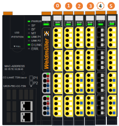
- ├ サブ ID は，UR20-FBC-CC-TSN のネットワーク構成設定の“増設ユニット構成”画面からも確認ができます。
-
-
DIP スイッチで設定したサブ ID と“増設ユニット構成”画面で表示されているサブ ID が異なる場合，安全制御が開始されません。
“増設ユニット構成”画面で増設ユニットを登録する際は，ユニットの装着順と同じ順番でユニットを登録し，DIP スイッチとサブ ID が一致するようにしてください。 - - DIP スイッチで設定するサブ ID を 64 以上に設定した場合，または電源 ON 中に DIP スイッチを変更した場合はエラー(エラーコード: 0107H)が発生します。
3. 配線例
3.1 安全出力配線
モジュールの出力は以下の配線に対応しています。
| 配線例 | パラメータ設定 |
|---|---|
| 1 | 2 x single-channel, P-switching or dual-channel, P-switching |
| 2 | 2 x single-channel, first channel N-switching |
| 3 | dual-channel, first channel N-switching |
【配線例 1および2】
2 つのシングルチャネル、P スイッチングまたはデュアルチャネルに対応。P スイッチング 配線図 1 の出力はタイプ C ソースに対応しています。
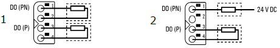
【配線例 3】
出力ペアの偶数側をシンク出力，奇数側をソース出力とした二重化配線で負荷を接続する例です。
下記は偶数の出力端子の極性を N-Switching(シンク出力)に設定します。
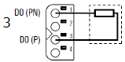
3.2 入力ダークテストを実施する場合の安全入力配線
パラメータ設定により、安全I/Oモジュールの入力用にテストパルスを有効にすることができます。これらのテストパルスはモジュールによって 生成および解析されます。したがって、最高の安全レベルを達成することができます（技術データを参照）。テストパルスの持続時間は入力遅延によって決まります。テストパルスなしで操作する場合、AUX-O XおよびAUX-O Yは供給電圧の出力として使用できます。アクティブな出力信号にはテストパルスが含まれ、その長さは0.5 msから10 msの間でパラメータ設定可能です。これらのテストパルスを無効にすることもできます。
【配線例 1および2】
二重化入力: NC/NCおよび NC/NOに対応しています。
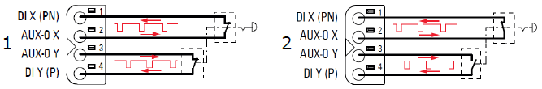
【配線例 3】
安全リレーの配線例です。
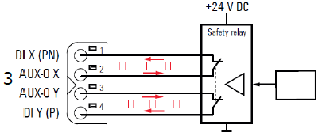
【配線例 4】
3線式でスイッチを接続する例です。
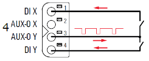
3.3 入力ダークテストを実施しない場合の安全入力配線
入力ダークテストを実施しない場合の外部機器との配線例を示します。入力ダークテストを実施しない場合(入力ダークテスト実施設定で”external”を設定した場合)，AUX端子はDC24Vの電源として使用できます。
【配線例 1】
制御出力(OSSD)付き安全装置の接続(安全機能付きI/Oユニットから安全装置への電源供給あり)
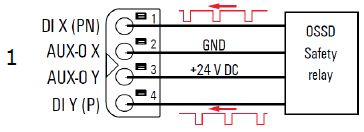
【配線例 2】
制御出力(OSSD)付き安全装置の接続(安全機能付きI/Oユニットから安全装置への電源供給なし)】
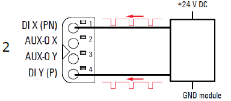
【配線例 3】
外部電源のスイッチ入力
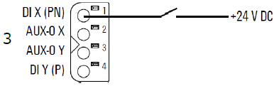
【配線例 4】
制御出力(OSSD)なしの外部装置の接続(安全機能付きI/Oユニットから外部装置への電源供給あり)
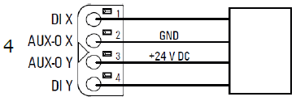
【配線例 5】
AUX端子とスイッチなどを接続する場合，DI0はN-Switching(シンク出力)で使用してください。
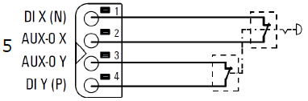
3.4 安全アプリケーションの使用例
安全アプリケーションの回路構築例をそれぞれ示します。
【OSSD機器の使用例】
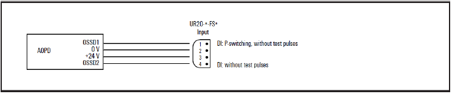
【テストパルスを使用しないアプリケーションの交差検出の例】
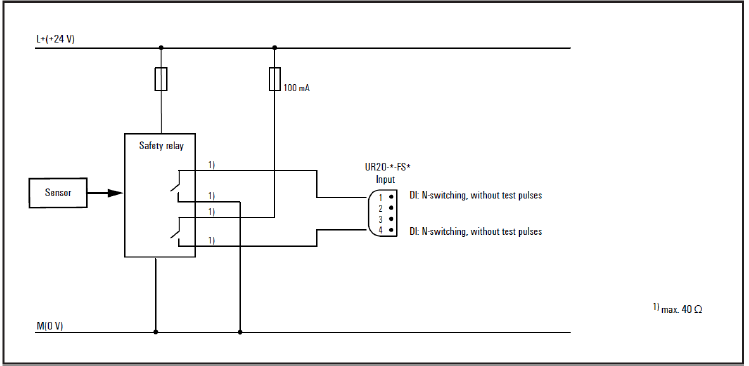
【安全マットの使用例】
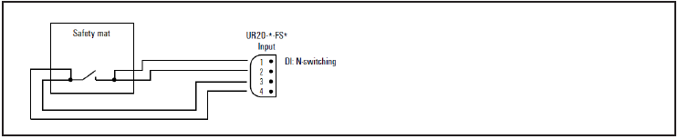
【ガード制御とゼロ速度監視(Zero-speed monitoring)を備えたアプリケーション(安全ドア)の例】
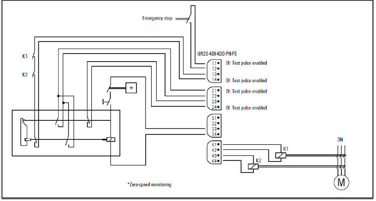
【2つの安全リレーを使用したアプリケーションの例】
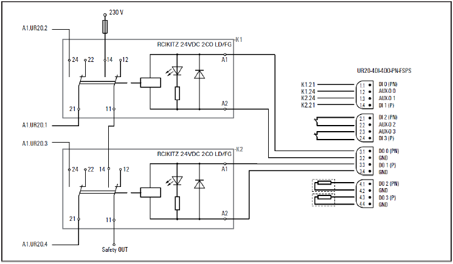
4. GX-works側設定
4.1 安全機能付きI/Oユニットのパラメータ設定
1. ”CC-Link IE TSN構成”画面を開きます。
[ナビゲーションウィンドウ]→[パラメータ]→[ユニット情報]→[RJ71GN11-T2]→[基本設定]→[ネットワーク構成設定]
2. ”増設ユニット構成”画面を開きます。
”CC-Link IE TSN構成”画面→UR20-FBC-CC-TSNのアイコンを右クリック→[システム構成を開く]→[増設ユニット構成を開く]
| 項目 | 項目名（詳細） | 内容 | 設定範囲 | 設定可否 | |
|---|---|---|---|---|---|
| UR20-8DI-PN-FSCC | UR20-4DI-4DO-PN-FSCC | ||||
| Transmission interval Monitoring time | 安全データの送信間隔監視時間を設定(単位: ms) | 27～1000 (*デフォルト: 80) | ○ | ○ | |
| Safety authentication code | 安全機能付きI/Oユニットの個体を識別する安全認証コードを設定 | 0x00000000～0xFFFFFFFF (デフォルト: 0xFFFFFFFF) |
○ | ○ | |
| Parameter setting |
Ch0: Input delay Ch1: Input delay |
入力DI0の入力応答時間を設定 入力DI1の入力応答時間を設定 |
-1 ms (0) -3 ms (1) -10 ms (2) -100 ms (3) *デフォルト: 1ms |
○ ○ |
○ ○ |
| Ch 0/1: Input dual channel mode |
入力DI0と入力DI1の入力の配線方法を設定 -single channel: 単一配線 -dual channel equivalent: 二重化配線(NC/NC) -dual channel antivalent: 二重化配線(NC/NO) |
-single channel (0) -dualchannel equivalent (1) -dual channel antivalent (2) *デフォルト: single channel |
○ | ○ | |
| Ch0: Input polarity |
入力DI0の入力端子の極性を設定します。 -P-switching: マイナスコモン -N-switching: プラスコモン |
-P-switching (0) -N-switching (1) *デフォルト: P-switching |
○ | ○ | |
|
Ch2: Input delay Ch3: Input delay |
入力DI0の入力応答時間を設定 入力DI1の入力応答時間を設定 |
-1 ms (0) -3 ms (1) -10 ms (2) -100 ms (3) *デフォルト: 1ms |
○ ○ |
○ ○ |
|
| Ch 2/3: Input dual channel mode |
入力DI0と入力DI1の入力の配線方法を設定 -single channel: 単一配線 -dual channel equivalent: 二重化配線(NC/NC) -dual channel antivalent: 二重化配線(NC/NO) |
-single channel (0) -dualchannel equivalent (1) -dual channel antivalent (2) *デフォルト: single channel |
○ | ○ | |
| Ch2: Input polarity |
入力DI0の入力端子の極性を設定します。 -P-switching: マイナスコモン -N-switching: プラスコモン |
-P-switching (0) -N-switching (1) *デフォルト: P-switching |
○ | ○ | |
|
Ch4: Input delay Ch5: Input delay |
入力DI0の入力応答時間を設定 入力DI1の入力応答時間を設定 |
-1 ms (0) -3 ms (1) -10 ms (2) -100 ms (3) *デフォルト: 1ms |
○ ○ |
× × |
|
| Ch 4/5: Input dual channel mode |
入力DI0と入力DI1の入力の配線方法を設定 -single channel: 単一配線 -dual channel equivalent: 二重化配線(NC/NC) -dual channel antivalent: 二重化配線(NC/NO) |
-single channel (0) -dualchannel equivalent (1) -dual channel antivalent (2) *デフォルト: single channel |
○ | × | |
| Ch4: Input polarity |
入力DI0の入力端子の極性を設定します。 -P-switching: マイナスコモン -N-switching: プラスコモン |
-P-switching (0) -N-switching (1) *デフォルト: P-switching |
○ | × | |
|
Ch6: Input delay Ch7: Input delay |
入力DI0の入力応答時間を設定 入力DI1の入力応答時間を設定 |
-1 ms (0) -3 ms (1) -10 ms (2) -100 ms (3) *デフォルト: 1ms |
○ ○ |
× × |
|
| Ch 6/7: Input dual channel mode |
入力DI0と入力DI1の入力の配線方法を設定 -single channel: 単一配線 -dual channel equivalent: 二重化配線(NC/NC) -dual channel antivalent: 二重化配線(NC/NO) |
-single channel (0) -dualchannel equivalent (1) -dual channel antivalent (2) *デフォルト: single channel |
○ | × | |
| Ch6: Input polarity |
入力DI0の入力端子の極性を設定します。 -P-switching: マイナスコモン -N-switching: プラスコモン |
-P-switching (0) -N-switching (1) *デフォルト: P-switching |
○ | × | |
作業中
以下追記予定・・・